Tab-complete the prompts you type to your coding agent.
Grey ghost text appears as you type into claude, codex, or any CLI. Tab accepts it. Ctrl+R rewrites the whole prompt. It wraps the agent in a pseudo-terminal, so nothing about your workflow changes.

install
npm install -g acomplete
run
acomplete claude # codex, or any CLI
keys
- Tab
- accept the whole suggestion
- →
- accept one word
- Ctrl+R
- rephrase the whole prompt in place
- Shift+Backspace
- undo the last accept or rephrase
- keep typing
- dismiss and refine
about
Made by Dilyorbek, a developer building terminal tools, Telegram bots, and small sharp software. acomplete is open source under MIT. If it saves you keystrokes, leave a star ★